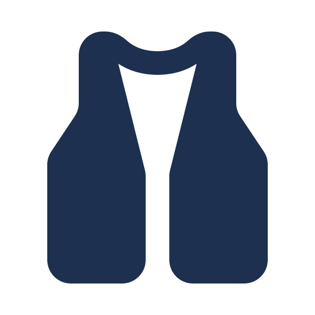
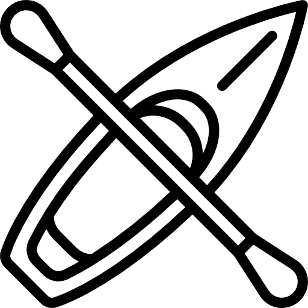

Passeio Iniciante
Nível: Fácil (Classe I-II)
Duração: 1h30
Ideal para famílias e quem nunca praticou rafting. Corredeiras leves, águas calmas e muita paisagem para apreciar durante o percurso.
Temos opções de rafting para todos os níveis de experiência, desde passeios tranquilos em família até corredeiras radicais para os mais aventureiros. Todos os passeios incluem equipamentos de segurança completos e guia certificado.
Nível: Fácil (Classe I-II)
Duração: 1h30
Ideal para famílias e quem nunca praticou rafting. Corredeiras leves, águas calmas e muita paisagem para apreciar durante o percurso.

Nível: Moderado (Classe III)
Duração: 2h30
Para quem já tem alguma experiência e busca mais adrenalina. Corredeiras mais rápidas e técnicas, com trechos de remada intensa.

Nível: Difícil (Classe IV-V)
Duração: 3h30
Feito para aventureiros experientes. Corredeiras radicais, quedas e muita adrenalina do início ao fim, acompanhados por nossos guias mais experientes.

Colete salva-vidas
Bote inflável profissional